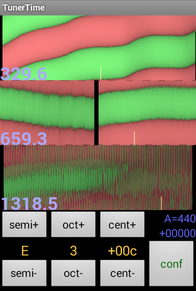
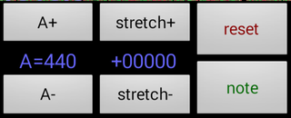

TunerTime is an Android application for tuning pianos. It is based on the same principle as a strobe tuner.
TunerTime can be used to tune any instrument, but it is specially designed for piano. TunerTime is very precise -- if you want to, you can easily tune an instrument to within 1/4Hz of the target (subject to the limitations of the instrument itself).
One thing TunerTime does not do is automatically determine the frequency of a note that it hears. You tell TunerTime which frequency you are aiming for, and it tells you how close you are getting. If you want a more convenient tuner (especially for guitars or wind instruments), there are many other apps for that.
It's unfortunate that it's kind of complicated to understand at the beginning. I think it is a very powerful and usable tuner, but the learning curve is pretty steep. If you do a lot of tuning, for example of pianos or accordions or pipes, then I think this is a very useful tool and well worth the learning experience. I hope my exposition of its operation here is not too discouraging.
I had Piano Servicing Tuning & Rebuilding by Arthur A. Reblitz and a very old piano by my side while I was writing this software. I have since used it to help me tune 4 pianos, and I wouldn't change a thing about it.
Yeah, TunerTime is a dumb name for this program. You should say it as if you were saying "it's tuner time." The same way you might say "it's dinner time," but perhaps with less anticipatory salivation.
In an electro-mechanical spinning-disk strobe tuner, you select the note by controlling the rotation of a patterned disk. Suppose you select 440Hz. When it is up to speed, there is a band on the wheel which is rotating at exactly the right speed so that the pattern repeats 440 times a second. There are also other bands with a tighter or looser pattern on them so that they are repeating at a harmonic (a multiple) of 440 Hz, generally by octave.
At the same time, there is a strobe light behind the wheel that is controlled by a microphone. Whenever the microphone picks up a burst of noise, the light brightens. If the microphone is picking up 440 bursts every second, then the light will shine on the disk at the same point in the pattern each time. The disk will appear to be stopped.
If the bursts are coming slightly too fast -- say 441 times a second -- then each time the light comes on, the wheel will be not quite as far into the pattern as it was at the previous burst. The wheel will appear to be spinning backwards.
If the bursts are coming slightly too slow -- say 439 times a second -- then each time the light comes on, the wheel will be a little further into the pattern than it was at the previous burst. The wheel will appear to be spinning forwards.
If the bursts are coming at a radically different frequency -- say 300 times a second -- then it will be hard to discern a pattern, though there may be a misleading signal from some harmonic.
In TunerTime, instead of a light coming on, there are green lines that are drawn while there is a burst of sound (and red ones when there is not). And instead of a pattern on a spinning wheel, there is a pattern that is traced on the screen.
So as time progresses, TunerTime traces a line from the top of the band to the bottom of it, showing green (burst) or red (no burst) as it goes. When it gets to the bottom, it jumps back up to the top, but moves a little to the right. When it gets all the way to the right, of course, it starts over again on the left side of the screen.
The frequency that is selected controls how long it takes TunerTime to draw a single vertical line before moving onto the next one. If the frequency is set to 440Hz, then every second, TunerTime will draw 440 vertical lines.
If the sound is at precisely 440Hz, then overall the image will be of a straight horizontal line. A burst of noise (green portion) will occur at the same time during each vertical trace.
If the sound is slightly flat, then the image will be of a descending line. If the sound is slightly sharp, then the image will be of an ascending line.
And like a real strobe tuner, TunerTime provides 3 different bands. It gives you one band at the base frequency that you selected, and then two more at octaves above that. It can be useful to see the higher harmonics, and also it is just convenient so you do not have to step through the octaves as much.
One thing TunerTime shows that a strobe tuner does not is a trend over time. Instead of simply looking at it and saying subjectively, "it is spinning faster than it was", you can see a second or two of history of it. This can have a few uses, as you shall see later.

Here's a description of the functional parts of the TunerTime user interface. This chapter will teach you what it does, if not quite how to actually use it.
At the top of the screen are the 3 bands of the tuner display. It is displaying 110Hz, 220Hz, and 440Hz. The little yellow lines at the bottom of each band mark seconds. It takes one second to move from the far left side of the screen to the yellow mark (and another second to reach the second yellow mark if there is one). This is useful to assign a number to how out of tune something is -- if the green line wraps around to the top once for every yellow mark, then that means it is exactly 1Hz out of tune. In this example, it happens to be about 7Hz out of tune.
Below that and to the left are buttons to select the note. On the left you can adjust the semi-tone ("note"). In the middle you can adjust the octave (middle C is in octave 3). Finally, you can fine-tune the cents (100 cents per each semi-tone step). It is rarely useful to adjust the cents, unless you are trying to determine the frequency of something.
Note that TunerTime uses the mathematically simple equally tempered scale, which is generally the modern standard but you may desire something different.
The blue text in the lower right provides the "middle A" frequency that was chosen as the basis of the scale (usually 440Hz, but some people tune to a different basis), and the stretch factor which controls how large an octave is. The stretch factor will get its own discussion later on.
Finally, the "conf" button in the lower-right corner changes to the configuration screen.

To the left is a screenshot of the configuration mode buttons. On the left you can adjust the frequency of the central A. Then you can adjust the stretch factor. The "reset" button returns A to 440 and zeroes out the stretch factor. The "note" button changes back to note mode.
Here I'm going to show you some sample images from the app with some notes about what the display tells us about the sound. Note that I captured these screenshots using a guitar, because my mean wife made me get rid of my piano. But generally all stringed instruments look the same in TunerTime. Flutes tend to produce a more perfect spectrum from TunerTime's perspective. I haven't tried brass or reed instruments, but their tones have more harmonics so I would guess generally they would look "messier."